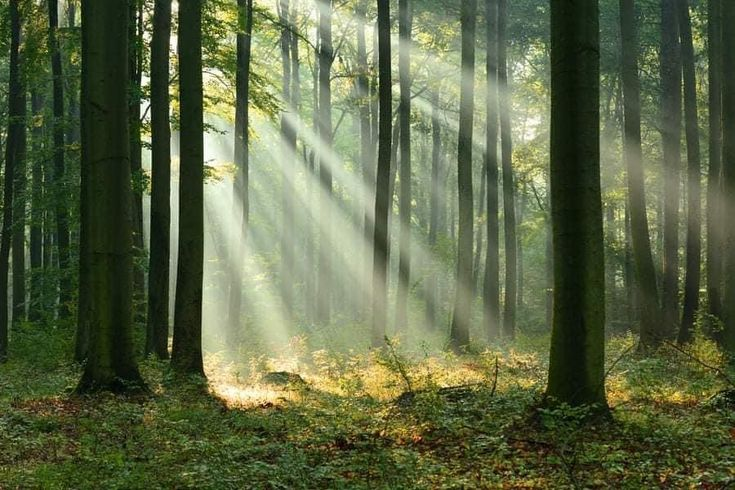
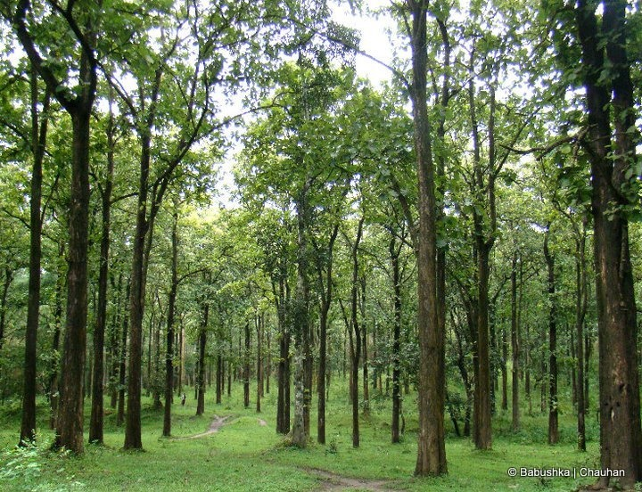
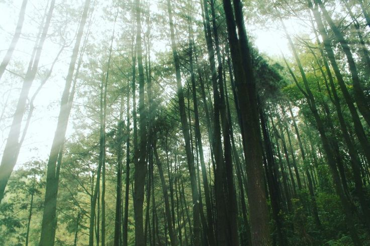
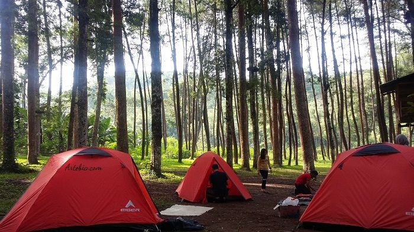
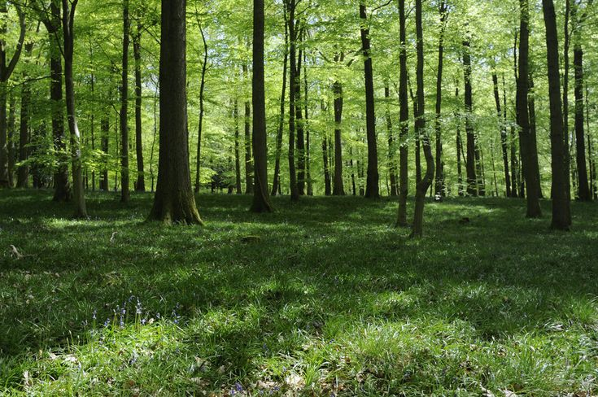

Hutan Pinus di Zona 235 Lampung : Keindahan Alam yang Perlu Dijaga
Zona 235 di Lampung membanggakan keberadaan hutan pinusnya yang memukau, menciptakan lanskap alam yang menawan dan memberikan manfaat ekologis yang tak ternilai. Mari kita eksplorasi lebih dalam tentang hutan pinus ini dan mengapa perlu kita jaga kelestariannya.
Keunikan Hutan Pinus di Zona 235

Hutan pinus di zona 235 Lampung menonjol dengan karakteristik uniknya. Pohon-pohon pinus yang tinggi menjulang, daun jarum yang rapat, dan aroma khas pinus menciptakan pengalaman yang istimewa bagi pengunjung. Kombinasi alam dan keberadaan hutan pinus memberikan daya tarik tersendiri bagi pecinta alam.
Ekosistem dan Keseimbangan Alam

Ekosistem hutan pinus berperan penting dalam menjaga keseimbangan alam. Pohon pinus membantu mengurangi erosi tanah, menjaga kualitas air, dan memberikan habitat bagi berbagai spesies flora dan fauna. Keberadaannya juga memberikan kontribusi positif dalam mengatasi perubahan iklim dengan menyerap karbon dioksida dari udara.
Pariwisata Berkelanjutan

Hutan pinus di zona 235 tidak hanya merupakan kawasan konservasi alam, tetapi juga menjadi tujuan pariwisata yang menarik. Ketenangan hutan, udara segar, dan keindahan alamnya menciptakan peluang untuk pengembangan pariwisata berkelanjutan. Aktivitas seperti hiking, camping, dan bird watching dapat dinikmati, sementara pendekatan berkelanjutan membantu melestarikan keindahan alam ini.
Ancaman Terhadap Hutan Pinus

Meskipun keindahannya tak terbantahkan, hutan pinus di zona 235 Lampung tidak luput dari ancaman. Deforestasi ilegal, kebakaran hutan, dan perubahan iklim merupakan faktor-faktor yang dapat merugikan ekosistem ini. Oleh karena itu, perlindungan dan pengelolaan yang bijak menjadi kunci untuk mencegah kerusakan yang dapat terjadi.
Peran Masyarakat Dalam Konservasi

Keterlibatan masyarakat setempat sangat penting dalam upaya konservasi hutan pinus. Program edukasi, partisipasi dalam kegiatan penghijauan, dan promosi turisme bertanggung jawab dapat membantu membangun kesadaran akan pentingnya menjaga kelestarian hutan pinus ini.
Kesimpulan
Hutan pinus di zona 235 Lampung adalah aset berharga yang tidak hanya memberikan manfaat ekologis tetapi juga menjadi sumber keindahan dan inspirasi. Dengan langkah-langkah perlindungan yang tepat dan partisipasi aktif dari masyarakat, kita dapat melestarikan keunikan alam ini untuk generasi mendatang. Kelestarian hutan pinus bukan hanya tanggung jawab pemerintah, tetapi juga tanggung jawab kita bersama untuk menjaga keindahan alam yang menjadi warisan berharga ini.